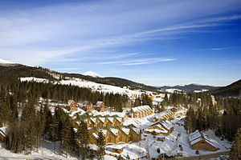
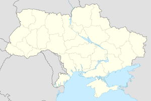
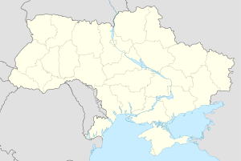

Букове́ль — найбільший гірськолижний курорт України. Розташований неподалік від села Поляниця Яремчанської міської ради, біля підніжжя гори Буковель на висоті 920 метрів над рівнем моря. Найвища точка курорту — г. Довга — 1372 м. Сезон триває з кінця листопада до середини/кінця квітня. 2012 року, Буковель було визнано найбільш швидко-зростальним гірськолижним курортом світу.
Курорт розташований неподалік від с. Поляниця Івано-Франківської області, за 30 км від м. Яремче і в 100 кілометрах на південний захід від м. Івано-Франківська. Буковель розташовано на п’яти горах: Буковель ( 1127 м.), Бульчиньоха ( 1455 м.), Довга (1373 м.) , Бабин Погар ( 1 180 м.), Чорна Клева (1 241 м.)